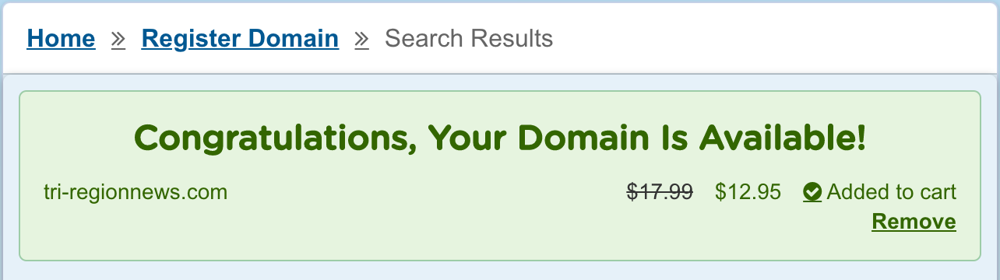

Site Name
Tri-Region News
Site Purpose
The Tri-Region News website is ment to be a central hub for local information. This the place where locals come to find out waht the weather will be like and what events are coming up. It's also a great resource for non locals to use who are making plans to visit the many offerings the Preston, Soda Springs, Fish Haven Idaho and the surrounding area have to offer.
Site Domain
www.tri-regionnews.com
